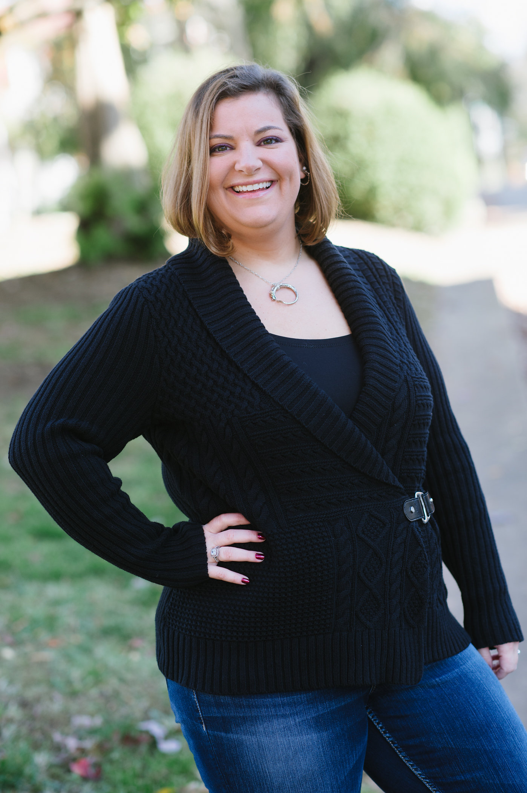

About Me
I am a brand-new web developer who has absolutely no background whatsoever in web development, but who is eager to learn. My background is primarily in education - specifically, Medieval English Literature (think: Chaucer) - where I've taught at all levels, but preferred college.
My whole goal here is to switch careers in dramatic fashion. There's no challenge left for me in education, and I want to do something I'm passionate about. Web development and database design have always intrigued me (I made an Access database about 10 years ago to organize my book collection), so I'm eager to see what else I can learn how to do.
So that's me. I'll be here for six months, learning to channel a new obsession, during which time I have no doubt I'll drive my husband, kids, and cats absolutely bonkers.